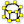

 Vertices Component
Component Index > Weaverbird > Wb Extract > Vertices Component
Inputs
| Name | ID | Description | Type |
|---|---|---|---|
| Mesh/Closed polylines group | G | The open or closed mesh, or closed polyline group, from which to extract the points. | Geometry |
| Weld | W | Should all points which are coincident be eliminated? | Boolean |
Outputs
| Name | ID | Description | Type |
|---|---|---|---|
| Points | P | The list of points constituting the mesh | Point |
Copyright © 2016 Robert McNeel & Associates.